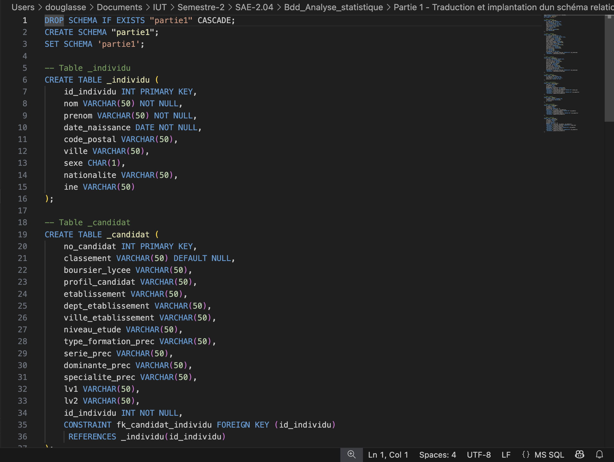

Base de Données & Analyse Statistique
Ce projet avait pour but d’apprendre à concevoir, exploiter et analyser une base de données relationnelle, puis de réaliser une étude statistique sur des données réelles.
Compétence n°10 : Exploitation d’une base de données
Ce projet est en lien avec la compétence 10 du programme du BUT Informatique : Concevoir, gérer, administrer et exploiter les données de l’entreprise pour permettre un bon pilotage.
Les outils utilisés :
Les étapes du projet
Le projet comporte la traduction d'un schéma relationnel en SQL, le peuplement de la base à partir de fichiers CSV, puis une analyse statistique des données (régressions, visualisations, etc.).
Dans cette partie, il fallait traduire un schéma relationnel en code SQL pour la création d'une base de données et documenter cette étape.
Ici, on a dû peupler la base de données que l'on venait de créer à partir de fichiers CSV fournis. Certaines contraintes devaient être respectées.
Dans cette partie, nous devions exploiter la base de données à des fins statistiques : réaliser des régressions linéaires, des visualisations, etc., puis fournir un rapport accompagné de captures d'écran des graphiques réalisés en Python.